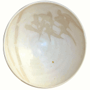
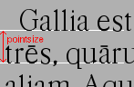

Frequently Asked Questions¶
Sir Toby: Thy most exquisite reason, dear knight?Sir Andrew I have no exquisite reason for’t,but I have reason good enough—Twelfth Night, II, iii, 130 – Shakespeare
(or many of the questions I’ve been asked so far)
General questions about FontForge¶
Why a font editor, aren’t there enough fonts already?
Does working on FontForge provide the same kind of pleasure as working on pots or baking bread?
Why doesn’t it use the native MS Windows or Mac windowing system?
Why isn’t FontForge written in C++? (or Why C++ is not my favorite language)
Why do I release FontForge under the BSD license and not GPL?
Why does FontForge load libraries at run time rather than being linked with them?
General questions about fonts¶
What is a 12point font? (What measurement of the font determines the point size)
Using FontForge & Installing fonts on various systems¶
Font Conversions¶
Questions about Hints and TrueType Instructions¶
Questions about Font Formats¶
What’s the difference between OpenType and PostScript (or TrueType) fonts?
What is the difference between AAT (Apple Advanced Typography) and OpenType?
Why does a font, which worked fine under 10.3 fail on Mac 10.4 (Tiger)?
What on earth are the cidmap files, and should I care about them?
Is it safe to use non-integral coordinates? Will it screw up in Word or anything?
Why isn’t my Open Type font much smaller than the .pfb file?
Does FontForge read in the old kerning information from fonts?
How do I set a particular bit in the OS/2 table (or any other)?
Mathematical questions¶
Image file questions¶
Random questions¶
FontForge’s grey background distesses me. How do I change it?
The fonts FontForge uses in its GUI are too small (too big) how do I change them?
Why does my window get iconified when I want to minify the view?
Why isn’t there a character named “mu” in my greek font? (or “Delta”, or “Omega”, or “pi1”)
Why doesn’t Edit->Copy copy glyph names as well as glyph info?
My system keeps crashing because FontForge keeps running out of memory. What can I do about it?
But Eeyore was saying to himself,“This writing business. Pencilsand whatnot. Over-rated, if youask me. Silly stuff. Nothing in it—Winnie-the-Pooh – A.A. Milne
- Why a font editor, aren’t there enough fonts already?
Well… no. Otherwise I wouldn’t be writing this, and. more to the point, there wouldn’t be thousands of people downloading it every month.
I am often asked this question; to me it represents a misapprehension. You wouldn’t go up to a paintbrush maker and ask if he thought there were already enough watercolor paintings. A font is a work of art and represents the individual genius of its creator. It is no more redundant than a watercolor.
However, accepting the question at face value, here are my attempts to answer it… er, pragmatically.
There are lots of latin fonts. There are far fewer greek, cyrillic, indic, thai, chinese, japanese, korean, unicode…
There aren’t many good quality free fonts available.
Researchers into old writing systems often need to design their own fonts
Even for latin, traditionally each new style of art and architecture has an associated style of fonts. New fonts are always being created to reflect the esthetics of the times.
Computer font technology is constantly changing. A font-format that was useful 10 years ago may not be so now.
Even if you are satisfied with the fonts that do exist they may not be complete
Missing ligatures
Missing accented glyphs
No matching cyrillic or greek glyphs
Everybody wants a font of his/her own handwriting.
Playing with fonts is fun.
FontForge has uses beyond simply creating and modifying fonts. It can convert from one format to another. It can extract information from the font file. Or it can simply show you what the font looks like without having to install it.
- Why did I write it?
Why not?
—The Phantom Tollbooth – Juster
Because it was fun
Because MacroMedia stopped development on Fontographer, and Fontographer was lacking features that I wanted.
To learn
For a more complete description see the FontForge history page.
- Why do I give it away?
Because I approve of free software and hope that the availability of good products on a good operating system will encourage people not to use proprietary systems.
Because programming is a lot more fun than marketing and giving things away is easier than selling them.
Because I’d have to spend more time doing QA if I sold it (and QA isn’t much fun).
- Why doesn’t it use the native MS Windows or Mac windowing system?
FontForge is not a commercial product and is not bound by the constraints of the market.
Doing that port doesn’t interest me.
I don’t have time nor do I have the skill to take that task on.
I’d like to encourage people to use Linux/unix
Of course, if I were to use either gtk or qt some of the difficulties of porting would vanish. But unfortunately I don’t like either of those widget sets.
Now… if you would like to do the port, that would be wonderful. I encourage you to do so.
- Why is FontForge based on a non-standard widget set?
I wanted a widget set that would handle Unicode reasonably well. In particular I thought support for bidi text was important for hebrew and arabic typography. As I was unaware of any widget sets that did that, I wrote my own.
I also wanted a widget set where I could actually figure out whether the checkbox was checked or not checked. In far too many cases my eyes can’t work out which is which… (Ironically the most frequent complaint I get is from people who can’t tell whether my checkboxes are checked. I don’t know what to make of that).
I realize now that that there are essentially two free widget sets that are far better at unicode support than mine. These are QT and gtk. I’m still not using either because:
Converting from one set of widgets to another is tedious. And people send me bugs which distract me.
If I spend my time doing that conversion I won’t be making FontForge more functional.
QT is written in C++, and, as I explain below, I don’t like C++, so that’s out.
The more I look at gtk the less I like it.
The support for images is atrocious (which is odd, since it was written for gimp):
There is no support whatsoever for client side bitmaps (and I want to support bitmap fonts)
Colors are ordered RGB in color tables for index images, but BGR for 24bit color images
No simple support for transparent images without resorting to full RGBA images, which is a bit of overkill when I want to draw a simple bitmap.
There is no overarching format for images, so I can’t have an image which itself knows whether it’s bitmap, index or truecolor.
Fixing these was possible, but it involved a lot of very low level work on my part – and I only know how to do that work on X.
I find the file chooser dialog really ugly. And it’s so complex I can’t figure out how to modify it to make it look nice (by my standards, that is).
I also can’t figure out how to modify the file chooser to make it behave the way the fontforge’s file chooser currently behaves (popup windows showing FontNames as you move the mouse over fontfiles, a pull down list of recently used files attached to the filename input box, etc.)
gtk+2 doesn’t run natively on Mac OS, and the only people porting gtk to the mac seem to be working on gtk-1
Many of the widgets I want to use have been deprecated. Sometimes I can’t figure out what replaces them, sometimes I am forced to used a far more complex widget instead.
So I tend to wrestle with it for a while and then decide than my current widgets are better after all.
I did get a limited version of fontforge running under gtk. I would be greatful if someone else would choose to extend and maintain it.
- Why isn’t FontForge written in C++ (or *Why C++ is not my favorite language*)?
I’ve been a little surprised to be asked this question, I had not realized my choice of language needed justification, but it appears to do so…
Basically because I don’t find object-oriented practices helpful in most cases, because I find C++ far too complex and badly designed, and because I can’t debug it easily.
I grew up with SIMULA and dabbled with SmallTalk and found after a few years that there were very few problems where an object oriented approach seemed natural to me. In most cases it just seemed to impose unneeded complexities on the problem.
The semantics of a C++ program cannot be specified. The compiler is free to generate temporaries as it wishes. In C this is not a problem, but in C++ the creation of a temporary can involve calling a constructor and a destructor which may have untold side-effects. I find this frightening.
The order of execution of external constructors is unspecified. I have seen many inexplicable bugs caused by this
I find it extremely difficult to debug C++. Stepping through a statement often involves many unexpected procedure calls (some of which are inlined and not obvious). This distracts from my main purpose in debugging.
Finally I find the language badly specified and too complex. Its various concepts do not fit well together. Each compiler seems to do things slightly differently.
I first met C++ in about 1981 when it was called C with Classes. I wrote the C++ front end for Green Hills Software’s compiler suite from 1987 to 1994 and I tracked each new version of the language from 1.1 to ANSI.
Each version added new features which did not sit well with the old ones. Each version was badly specified. The reference implementation was wildly different from the specification. For example the behavior of virtual functions inside constructors was not specified until version 2 of the language and since this behavior was different from naive expectations this caused bugs. My favorite confusion occurred in (I think it was) the version 2.1 specification where on one page, within a few paragraphs, the following two sentences occurred: “Unions may contain member functions.” and “Unions may not contain member functions.”.
The above are my personal opinions based on my experience and explain why I do not use C++. Your opinions probably differ, few people have spent 5 years writing C++ compilers.
- Why do I release FontForge with the BSD license and not GPL?
I just don’t like GPL. It’s partly prejudice, partly real.
I don’t like forcing restrictions on people.
I’m giving away fontforge, so I do.
The BSD license says “Don’t sue me, and include my copyright notice if you use my code” and that’s all I care about.
Perhaps I am naif, but I don’t believe that anyone is going to start selling fontforge. Why would they? It makes no sense for someone to try to sell what I give away freely. If they add functionality to fontforge, then that’s a different matter, but in a sense they aren’t charging for fontforge, they are charging for the code they have added to it. It would be annoying if someone did that, a bit rude in my eyes, but I’m not going to say “no”.
Now someone might take a small piece of fontforge and use it in something else. That doesn’t bother me. I know that some of my OpenType code has been snagged by some TeX packages. And I have snagged code for generating checksums from some other packages.
I rather like helping other people. And people have helped me.
- Why does FontForge load libraries at run time rather than being linked with them?
I dislike dependencies. The fewer the better.
I hate when I download a package and discover it won’t work unless I download half a dozen other packages (which, in their turn may demand that I download yet more packages).
I want to download a package and just have it work.
So I try to write as much code myself as I can and release it all together in a lump and not force people to wander all over the web looking for disparate parts.
When I can’t figure out how to do something myself I will use an external library if I must. Even then I will try to insure that fontforge will run if the library is not present on a system. When I release a binary package I don’t want to have to release 32 packages per host depending on the possible presence or absence of 5 different libraries. But I also don’t want to force someone to install a library that s/he will never use just to get fontforge to start.
If a user will never look at an svg glyph then they don’t need to install libxml2. If the user will never import a jpeg image (and there’s really no reason to want to do that) then they don’t need to install libjpeg.
Instead, the binaries I release will try to load a library dynamically (dlopen) when they need it and not before. This will also speed up starting fontforge. If the library is on the system then all is happy and nice. If the library is not, then that functionality is lost – but the rest of fontforge continues to work.
- Why is there no future roadmap for FontForge?
- TYSON:I’m not bewildered, I assure you I’m notBewildered. As a matter of fact a planIs almost certainly forming itself in my headAt this very moment. It may even be adequate.
—The Lady’s not for Burning – Christopher Fry
Mostly because I don’t thnk that way. I don’t plan things out, I have a vague idea where I want to go and I explore in that direction.
Consider python scripting. I decided to add python to fontforge. I found that meant it became easier to design a mechanism so users could create their own scripts to add import/export file formats. And then startup scripts, and scripts when certain standard “events” happened. And then I could allow users to define their own menu items. And then I figured out how to add fontforge to python (as opposed to the reverse). And now I realize that there is no reason I couldn’t define a set of c-bindings so that people could call fontforge as a library from within C programs. And who knows where that will lead – if anywhere.
Each stage means I can see a little further, and go a little further, and then see a little more.
And often ideas will come from users, someone will ask for functionality I had not thought of.
I did maintain such a page for a while. I found that half the things I wrote never happened, and most of the time I didn’t bother to update the page. I’d forget about it. It was dull. Far better to do that to simply speculate on what I might do were I not speculating.
So don’t ask me what will happen next, because I don’t know either. It’s an adventure. We’ll just have to wait and see.
Does working on FontForge provide the same kind of pleasure as working on pots or baking bread?
From an interview with Open Source Publishing, done at LGM 2007
I like to make things. I like to make things that – in some strange definition are beautiful. I’m not sure how that applies to making bread, but my pots – I think I make beautiful pots. And I really like the glazing I put onto them.
It’s harder to say that a font editor is beautiful. But I think the ideas behind it are beautiful in my mind – and in some sense I find the user interface beautiful. I’m not sure that anyone else in the world does, because it’s what I want, but I think it’s beautiful.
And there’s a satisfaction in making something – in making something that’s beautiful.
And there’s a satisfaction too (as far as the bread goes) in making something I need. I eat my own bread – that’s all the bread I eat.
So it’s just – I like making beautiful things.
- Is it legal to modify a font? Is it ethical?
Many current fonts are based on the work of great designers from centuries past – so reusing other people’s designs has a long history. On the other hand, no matter what the law, it is clearly unethical to steal the work of a living designer.
Legal matters vary from country to country (and perhaps within countries). You really should consult a lawyer for a definitive answer. Here are some guidelines:
Look at the license agreement you received with the font and see what it has to say on this issue.
TrueType (and OpenType and potentially CID-keyed fonts) have a field in the OS/2 table called FSType which allows the font designer to place restrictions on what other people can do with the font. If this field prohibits modification fontforge will ask you to make sure you have an agreement with the font designer which supersedes this field.
My understanding of US law (but check with a lawyer before relying on this) is that:
There is minimal legal protection for font designs. Ages ago some legal figure claimed “The alphabet is public.” This meant a type design could not be copyrighted.
However (I’m told) a designer may register (with the government) for a design patent which protects the design for 14 years (if granted). I don’t believe it can be renewed, but I may be wrong.
Registering for a patent is an expensive and time-consuming process and is often outside the ability of a small design firm. As far as I know the law has never been tested in the US so the protection may be questionable.
Font programs (such as a postscript or truetype font file, but not a bitmap font file) may be copyrighted. This means the design itself is not protected, but the mechanism for creating it is.
Font names may be trademarked.
My understanding is that in the UK:
There is something called a “design right” which is somewhat like a copyright and protects a design for 5 years. A designer may also register the design with the government up to 5 times to extend this protection to 25 years.
Throughout the EU:
There are EU design rights. I’m not sure about the specifics of these, nor how they interact with country specific laws (as the British design rights above).
In Canada:
Font designs may be registered as “industrial designs” for a limited time (~15 years)
I would welcome any additions or corrections here, as well as info on the laws governing fonts in other countries. There is a thread on typophile which discusses this.
There is a good summary at the font embedding website.
- What is a 12 point font? (What measurement of the font determines the point size?)
- 
A font is 12 points high if the distance between the baselines of two adjacent lines of (unleaded) text is 12 points.
The pointsize is not based on the sizes of any of the glyphs of the font.
Back when fonts were made out of metal, the pointsize of the font was the height of the metal slugs used for that font.
In some sense this is not a very good measure of the size of a font (some fonts may allow more room for accents or ascenders or descenders than others meaning that the height of the actual glyphs will be smaller).
There is also a measurement scheme based on the x-height of the glyphs.
In England and the US a point has traditionally meant the pica point (1/72.27:sup:th of an inch), while in Europe the point has been the didot point (1/67.54:sup:th of an inch). The Europeans have a slightly larger point, but the glyphs of English and European fonts appear the same size. English does not use accents (except in very rare cases) while most European languages do, and the slight increase in the size of the point allows more room for accents.
(Of course now most Europeans are probably forced to use the pica point by their desktop software, while most computer fonts now contain accented glyphs, so the distinction and the reason for it may have vanished).
- How do I set the line spacing on a font?
It depends on the kind of font you are generating, the operating system under which you are running, and luck.
For Type1 fonts there is no way to set the line spacing. Applications will often take the values specified in the font’s bounding box and use those to set the line spacing. This is a really bad idea on their part, but it is common practice.
For True/Open Type fonts the answer is complicated.
On the mac
The line spacing is set by the ascender and descender values of the ‘hhea’ table. These in turn are set to the bounding box values of the font. Not a good choice. You can control these values from Element->Font Info->OS/2->Metrics.
On windows
Line spacing is supposed to be set to the Typo Ascent/Typo Desent values specified in the OS/2 table. And these in turn are supposed to sum to the emsize. (FontForge sets these values to the ascent/descent values you specify for your font). Unfortunately most windows applications don’t follow this rule, and instead base linespacing on the Win Ascent/Descent values of the OS/2 table. These values are supposed to specify a clipping region for the font (not line spacing). The clipping region should be as big as the font’s bounding box, but in some cases needs to be bigger. Again these may be set from Element->Font Info->OS/2->Metrics.
(The clipping region should be bigger than the bounding box if a GPOS lookup could move a glyph so that it extended beyond the bounding box (mark to base is likely to cause problems). I’m not sure how this applies to cursive positioning in Urdu where GPOS lookups can make lines arbetrarily tall)
MicroSoft has added a redundant bit to the OS/2 table, which essentially tells applications they should follow the standard and use the Typographic linespacing fields. This bit is called UseTypoMetrics in OpenType, and in FontForge it is available as .
On linux
I don’t know that there is a general consensus. An application will probably use one of the above methods.
Actually this is not a very useful question any more. Modern fonts tend to have several different scripts in them and the different scripts may have different line spacing requirements. Even within one script there may be differences (English uses no (or extremely few) accented letters, while most other European languages use accents, thus English could be set more densely than German).
Instead of having one global measurement which controls the line spacing for all uses of the font, it is better to have more specific measures which control the line spacing dependent on conditions. The OpenType ‘BASE’ table does this. It allows you to specify extent data depending on script, language and active feature (for example, a ‘mkmk’ feature might increase the line spacing). I don’t know whether any applications actually make use of these data
- How big will my glyphs be?
Unfortunately this seemingly simple question cannot be answered. Your glyphs may be any size. Outline glyphs may be scaled and even bitmap glyphs will be different sizes depending on the screen resolution.
Suppose instead that you have an outline font that you draw at 12 points. Then we can answer the question.
Suppose you have a dash glyph that is 500 internal units long, and the font has an em-size of 1000 units. Then your glyph will be 500/1000 * 12 = 6points long. On a 72 dpi screen this will mean the dash is 6 pixels long.
- What are em-units? (internal units?)
When you create your font you can use Element->Font Info->General to provide an em-size for your font. This is the sum of the typographic ascent and descent (in the days of metal fonts, the height of the metal slugs, the baseline to baseline distance). Generally the em-size will be 1000 or 2048. This gives you the number of internal units (also called em-units) used to represent em.
Within fontforge outline glyphs are displayed using the coordinate system established here. See also the section on em-units in the overview.
- What’s a good license to use on an open source font?
Many fonts have been released under one of the licenses designed for open source programs – see the Open Source Initiative list of approved licenses – but these generally do not meet the specific needs of font designers. I know of two licenses specifically produced for fonts:
The Open Font License from SIL (and its FAQ)
The above is the license I would recommend.:doc:A collection of unofficial translations of the OFL </appendices/OFL-Unofficial>. These are not legally binding but may help non-English speakers get the intent of the license.
The GNU General Public License is also often used.
- Minimum requirements
This depends heavily on what you want to do. FontForge is mainly limited by memory (though screen real estate can be a problem too)
If you are interested in scripts with no more than few hundred simple glyphs (like the latin alphabet) then 192Mb is more than enough.
If you are doing serious editing of CJK fonts then 512Mb is on the low end of useablity.
FontForge requires a color (or grey-scale) monitor – black & white will not suffice.
- Why does FontForge use so much memory?
Fonts are generally stored in a very compact representation. Font formats are designed to be small and easily rasterized. They are not designed to be edited.
When it loads a font FontForge expands it into a more intuitive (well intuitive to me) format which is much easier to edit. But is much bigger.
It would probably be possible to rewrite FontForge to use a more efficient memory representation. But this would be an enormous amount of work and doesn’t interest me.
Sfd files are large because they are an ASCII representation of this same expanded format. They weren’t designed to be compact but to be legible.
See also: My system keeps crashing because FontForge keeps running out of memory. What can I do about it?
- How do I install the fonts once I’ve made them?
Well it rather depends on what system you are working on, and what type of font you’ve got:
- Unix & X
- Outline fonts and fontconfig
Many programs now use fontconfig to find fonts (including fontforge). To install a font for fontconfig, simply copy the file into your ~/.fonts directory.
- Bitmap fonts, and vanilla X11 installs
I’d suggest that you look at the linux font HOWTO file, and the font deuglification HOWTO as good starting points. But I’ll run over the highlights
Essentially you designate one (or several) directories as a “font directory”. You move your fonts to that directory. You build up certain data structures that X needs, and you tell X to include this directory in your font path. Sadly different versions of X and the X font server use slightly different conventions. You may need to alter these procedures a bit.
For example, if you want to install a bdf font called frabnuts-13.bdf then you might:
$ mkdir my_fonts $ mv frabnuts-13.bdf my_fonts $ cd my_fonts $ bdftopcf frabnuts-13.bdf >frabnuts-13.pcf $ mkfontdir $ xset fp+ `pwd`
and your fonts should be installed. After that, whenever you start X you need to remind it of where your fonts live, so you should add
$ xset fp+ /home/me/my_fonts
to your .xsession (or equivalent).
If you want to install postscript fonts
You should generate them as postscript binary (.pfb) files, then move both the .pfb and the .afm file into (one of) your font directory(ies) and run type1inst in it.
type1inst will probably complain that your font doesn’t have a foundry and will probably get the encoding wrong. You can either:
Ignore it and nothing bad will happen
Manually edit fonts.scale after running type1inst to fix these entries
Make your font’s Copyright be reasonable, and then edit type1inst and add your foundry (directions for this are in type1inst itself)
If you want to install truetype fonts
You move the .ttf file into your font directory and run mkttfdir and mkfontdir.
(mkttfdir has a small problem with fonts created by FontForge, it will almost invariably complain that it doesn’t recognize the foundry. You can safely ignore this, but if it bothers you then add a line to ttmkfdir.c at 936
{ "PFED", "FontForge" },
Some versions of X (ie, those shipped by redhat) rely on the x font server to do font work rather than the X server itself. You may need to use chkfontpath to add your new directory to the font server’s font path (rather than xset fp).
You may also need to insure that the font directory (and all its parent directories) are readable to world. (the font server runs as a non-privileged user)
I haven’t seen anything that says X supports opentype fonts yet, but since freetype does (and I think X’s rasterizer uses freetype) then X might support them too. Installing them will require manual editing of fonts.scale though (mkttfdir uses freetype1 which doesn’t support otf files).
That sounds really confusing. I apologize, I’m not a good writer and there are too many choices in configuring X…
- KDE
(I don’t know KDE very well, so take my experience with a grain of salt) Under KDE there is a tool called kfontinst which is supposed to do all the configuration work for you. I was only able to get it to work as root and had to reconfigure my system to follow its conventions, but once that was done it installed X fonts quite handily. I never did figure out how to get it to install ghostview fonts. (I experimented with version 0.9.2)
- TeX
TeX has its own (platform independent) system for installing fonts. I’ve described my experiences so far elsewhere in this document.
- Windows
You install truetype fonts on windows by dropping them into the \Windows\Fonts directory on your machine. You may need to set the execute permission bit on the font before installing it.
Warning
Do NOT generate the font directly into \Windows\Fonts This doesn’t seem to work (at least on under my XP machine). You must generate the font into another directory and drag & drop it to \Windows\Fonts .
If you want to use type1 fonts you will need to install adobe type manager and follow its instructions.
If you want to install opentype fonts then on old systems (before windows 2000, I think) you need to install ATM, on more recent systems opentype should work the same way truetype does.
- Macintosh OS 9
Oh dear. The mac sticks fonts into resource forks and wraps them up in its own headers. Mac fonts aren’t compatible with anybody else’s. FontForge can create a resource fork if it wraps the font up in a macbinary encoding. See the following question for more information.
I’ve also written some utilities designed to convert from one format to another and they may prove useful.
University of Oregon has some links that might be helpful.
Once you’ve converted your fonts you just drop them into the System Folder and they should be available after that.
- Macintosh OS X
On OS/X fonts should be placed either in the top-level Library/Fonts directory (By default
/Mac OS X/Library/Fonts/), in the System/Library/Fonts directory, or in the user’s appropriate fonts sub-directory (~/Library/Fonts).Either a resource font (unwrapped from its macbinary wrapper) or a dfont may be used. You can also use straight ttf and otf files (ie. the same file you might use on Unix or MS).
As far as I can tell the old NFNT bitmap resources do not work on my OS 10.2. If you want to use bitmap fonts wrap them up in a ttf file or an sfnt. However if you want to use a Type1 resource font, you must generate a (useless) bitmap font and install them both.
- Why won’t FontForge’s fonts install on some MS Windows machines?
Do NOT generate a font directly into the \windows\fonts directory. Generate the font into a different directory and then use windows drag and drop to install the font. (Windows appears to do magic when it moves the font into that directory).
Recently (2009) a windows security patch decided that fonts with a ‘name’ table bigger than 5K were insecure and refused to install them. Frequently this is caused by having the full text of a license included in the font.
I am told that fonts produced by old versions of FontForge will not install on Windows 2000 (and XP) systems.
I believe this problem is fixed now (as of 20-Oct-2003). If you have an older version please upgrade.
If you are copying a font from another machine make sure the execute bit is set in the permissions of the font file (I don’t know how to do this with the Windows UI, under cygwin you say
$ chmod +x foo.ttf
- How do I edit fonts from my macintoy?
- Mac OS/9 (or less)
Traditionally the macintosh has stored fonts in the resource fork of files (after about OS/8.5 I believe the mac also supported bare .ttf files). This causes problems for any machine other than a mac, because the very concept of a resource fork is lacking.
There are several programs whose job it is to store all of a macintosh file in one package that can be manipulated on other systems (mac binary and binhex are the most common). FontForge knows how to read both of these formats and can extract a postscript or truetype font from either. FontForge can also create fonts in macbinary format (I see no reason to support both output formats, and macbinary is slightly simpler).
So to edit a font on your mac:
Find the file in the
System Folder:FontsfolderCopy the file over to your unix machine
Use Fetch and specify macbinary format
Or use some tool like binhex which can create the file directly
Open it in FontForge
Edit it
Save it back in macbinary format
Copy it back to your mac
Fetch will automatically undo the macbinary wrappers and make it be correct
Or various other tools can unwrap it.
Drop it back into your system folder (where it is automagically moved to Fonts)
Note: make sure you either replace the original font files, or that you rename the font within fontforge and (for postscript fonts) that you give it a new unique id. See the Font Info dlg.
Caveat: A postscript font is useless on a macintosh unless it is accompanied by at least one bitmap font. If you generate a postscript font make sure you also generate an NFNT as well (this has the FOND).
Caveat: The mac is picky about the filename used to contain a postscript file. It is based on the postscript font name but suffers a transformation. Don’t try to rename this file. Basically the rules are (see Adobe Technical Note 0091):
The fontname is broken into chunks where each chunk starts with a capital letter.
The first chunk may have four lower case letters following the initial capital
Subsequent chunks may only have two lower case letters following the capital.
Non-letter glyphs (or at least hyphens) vanish.
So TimesBold => TimesBol, Helvetica-BoldItalic => HelveBolIta, NCenturySchoolbook => NCenSch
- Mac OS/X
On Mac OS/X you can run FontForge directly. OS/X has several font formats, some fonts are stored in the old format (see above), while others are stored as data fork resources. The data fork font files generally have the extension “.dfont”. On a Mac FontForge is able to edit both formats directly. OS/X also supports normal .otf and .ttf font files.
Mac OS/X does not seem to support the old NFNT bitmap format, but it still requires that a bitmap font in NFNT format be present before it will use a resource-based postscript font. (It is probably not the NFNT resource which is required, but the FOND which goes along with it. But I’m not going to write something to produce a bare FOND resource – nothing else does either).
- How do I create a mac font family? (How do I get the mac to group my fonts so that the italic and bold styles work)?
I am told that in 10.6 the prefered method of grouping fonts is to use ttc files, prior to 10.6 ttc files didn’t work (well) and the prefered method was to produce mac font families.
- Snow Leopard (10.6) and after
First open all the fonts that make up your family in fontforge.
Then choose
This should be simpler than the old method.
- Leopard (10.5) and before
For the Style menu in most mac applications to work on your fonts, you must create a font family. You do this with the File->Generate Mac Family command.
All the fonts in a family must have the same Family name (See the font info dialog). Font Families are handled rather differently under Carbon (the old font handling mechanism used in OS 9) and under ATSUI (on OS/X).
Under Carbon, the font family is limited by the design of the Mac ‘FOND’ resource, which reflects the computer font technology of the early 1980s. Modern computer fonts often have variants that can’t be expressed in it. FONDs support any combination (except one containing both Extend and Condense) of the following styles:
Bold
Italic
Condense
Extend
Underline
Shadow
Outline
Mac FONDS do not support “Black”, “DemiBold”, “Light”, “Thin” or “Extra-Condensed” variants.
Under ATSUI, on the other hand, a family seems to consist of all fonts in a given resources file which have the same FamilyName.
In order that a family be useful under both systems, Apple appears to place several FONDs inside such a font file. Each FOND contains a sub-family of related fonts. The ‘FOND’s appear to be distributed as follows:
Suppose you have a family of fonts with the following styles:
Regular, Bold, Italic, Bold-Italic, Condense, Condense-Italic, Oblique, Light, Light-Italic, Black
Then you should create a font family with the styles that the FOND does support, which in this case would be
Regular, Bold, Italic, Bold-Italic, Condense, Condense-Italic
For each of these use Element->Font Info->Mac to set the FondName field to the font’s family name.
Change the fondname of the other styles, so that the Oblique style has Oblique in the fond name, the two Light styles have Light in the fond name, and so on. Set the Mac Style on the “Light” variant of the font to be Regular (everything unselected) and set the style of the “Light-Italic” variant to be “Italic” – that is, forget about the “Light”, the FOND can’t handle it, that’s why we moved it into its own FOND.
Having done this setup, the Generate Mac Family command should be able to put all the fonts into appropriate FONDs, and then place all the FONDs into one file, which the Mac should interpret correctly.
- Why doesn’t ATM work on my (mac) fonts?
Insure that the font has an encoding of Macintosh Latin when you generate it.
This is really a limitation on ATM’s part and there’s nothing FontForge can do about it.
If you generate a font with an encoding other than Macintosh Latin, then the Mac’s default behavior is to force the postscript font to have a Macintosh Latin encoding. There is a mechanism to turn this behavior off, but if it is turned off then ATM won’t work at all.
- How do I edit fonts on MS windows?
See the MS Windows install instructions.
- Why don’t my fonts work on windows?
Here’s one possibility: Windows sometimes (and I don’t know when) insists on having a name for the font in the appropriate language (ie. a Japanese entry for a SJIS font). Try going to Element->Font Info->TTF Names and adding a set of strings for your language.
Another possibility is discussed here.
- When I load an otf or a type1 font most of my references have been replaced by inline copies. How do I get my references back?
It is very difficult to figure out old references when loading postscript fonts. Instead FontForge has a special command, Edit->Replace With Reference, that will search for potential reference candidates in the font and replace them with references.
- Does FontForge read in the old kerning information from fonts?
This question needs to be broken down into cases:
- TrueType and OpenType fonts
Yes. The kerning information is stored in either the ‘kern’ or ‘GPOS’ tables of these fonts and FontForge can read them (Apple has made a number of extensions beyond the original truetype spec, FontForge can read these too).
- PostScript Type1 fonts anywhere other than the Mac.
The kerning information is not stored in a Type 1 font file. Instead it is stored in a file with the same filename as the font file but with the extension “.afm”. When FontForge reads a PostScript font it will check for an associated afm file, and if found will read the kerning information from it.
- PostScript Type1 fonts on the Mac.
No. Again the kerning information is not stored in the font file (it is stored in a bitmap font file), but on the mac it is impossible to guess what name to use for the associated bitmap file, and FontForge does not even try.
See the info below on how to load kerning from a FOND.
- AFM and TFM files.
FontForge can read kerning information directly from these files and apply those data to a font. See the File->Merge Feature Info menu command.
- Mac resource files containing FOND resources.
The mac stored kerning information in the FOND resource associated with a bitmap font (it is not stored in the file with the postscript font). If you wish kerning data for a mac postscript font, you must find a font file containing a bitmap font with the same family and style as the postscript. FontForge can read kerning information directly from these files and apply those data to a font. See the File->Merge Feature Info menu command.
- Adobe Feature files
Adobe has a textual representation for OpenType features and lookups, and fontforge can read these files with the File->Merge Feature Info menu command.
- How do I convert from one outline format to another?
The simple answer that will work if you want something quick is:
File->Open
an existing font
-
to generate the desired output.
If you are converting from one PostScript format to another (pfb to otf, for example) that’s all you need to do. If you are converting between PostScript and TrueType, you can improve matters if you do a little more work.
Converting from TrueType (quadratic splines, ttf files) to PostScript (cubic splines, otf and pfb files):
File->Open
(the truetype font)
-
Check <*> All layers cubic
[OK]
Converting from PostScript (cubic splines, otf and pfb files) to TrueType (quadratic splines, ttf files):
-
Check <*> All layers quadratic
[OK]
- How do I convert from one bitmap format to another?
This is also easy, open a bitmap font, and then use Element->Generate Fonts to generate the desired output.
- How do I convert from an outline format to a bitmap format?
Load the outline font. Then use Element->Bitmaps Available to generate bitmap strike(s) of the appropriate size(s). This process is called rasterization, at small pixel sizes it is difficult for a computer to do well. You might be advised to examine the results of the rasterization in the bitmap window (with Window->Open Bitmap Window), and possibly fixup the bitmap as you go. Then when done select Element->Generate Fonts, turn off outline font generation (unless you also want an outline font, of course), and select the desired bitmap format.
- How do I convert from a bitmap format to an outline format?
Unless you have a very large bitmap font (such as a TeX font) the following procedure will not produce good results.
Before you do anything else make sure you have either the potrace or autotrace programs installed on your system
Create a new font
Use the File->Import command to import your bitmap font into this new font
Be sure to check the
[] Into Backgroundcheckbox
At this point you will probably want to look at your outline glyphs and clean them up.
- Converting from Apple’s Advanced Typography to OpenType
There are a number of similarities between the results achieved by these formats, but the overlap is not total. Most conversions will lose some information.
The simple answer is that this is pretty much automatic. You load an apple font, and then Generate an equivalent font with the [*] OpenType checkbox checked in the Options dialog.
FontForge will convert any non-contextual features where Apple’s feature/setting matches an OpenType feature. (This includes non-contextual ligatures even though they live in a contextual format). For more information see the section on this interconversion.
- Converting from OpenType to AAT
Again this is mostly automatic. Load an OpenType font, and Generate an equivalent font with the [*] Apple checkbox checked in the Options dialog.
FontForge is capable of converting some contextual OpenType tables to AAT. Non-contextual features which match an Apple feature/setting will be converted too. For more information see the section on this interconversion.
- How do I make FontForge use hint substitution?
It happens automagically.
Or you can control the place where hint sets change by selecting a point and choosing Element->Get Info->Hint Mask.
- How do I make FontForge use flex hints?
It happens automagically. FontForge will generate flex hints in situations where it is appropriate to do so. You don’t need to do anything. If flex hints are used then the necessary subroutines will be added to the font. If they are not needed then the subroutines will not be added.
- How can I tell if it is going to use flex hints?
If you want to see whether FontForge is going to use flex hints, turn on the UpdateFlex preference item and open a view on the glyph. FontForge displays a green halo around the center point of a flex hint.
- My glyphs are all perfectly hinted, why do some stems have different widths (or appear fuzzy, or fade away completely)?
Both PostScript and TrueType require that glyphs be drawn in a clockwise fashion. Some rasterizers don’t care. But other rasterizers will have difficulties with counter-clockwise paths and produced stems of different widths when they should be the same, or fuzzy stems, or even nothing at all. The solution to this is to run on all your glyphs before generating a font.
But sometimes the poor rasterizer just can’t do the right thing…
- How do I set a particular bit in the OS/2 table (or any other)?
FontForge does not do this, but I have written a companion program, mensis (Latin for: “to or for, by, with or from tables”) which gives you bit access to tables. It provides both UI and scripting access.
- What’s an sfd file?
This is FontForge’s own format. It a text file, which means it is large but readable to a human (OK, by a determined human). It only uses ASCII characters which means it should not be distorted by old mail programs if sent around the internet (it’s a registered MIME type
application/vnd.font-fontforge-sfd).
- FontForge’s grey background distresses me. How do I change it?
The general mechanism is discussed on the X Resources page.
- The fonts FontForge uses in its GUI are too small (too big) how do I change them?
The X server does not have a good idea about screen resolution, and when fontforge asks it, the answer is often wrong. The result is that ff may use fonts that are too small (potentially too big too, but no one has complained about that one yet). You can tell fontforge the true screen size by adding a line like
Gdraw.ScreenWidthInches: 14.7 Gdraw.ScreenWidthCentimeters: 37.3
to your
~/.Xdefaultsfile (The general mechanism is discussed on the X Resources page). If the GUI fonts are still too small you can lie about the screen size. If you claim the screen is smaller (in inches or centimeters) than it actually is, ff will use a bigger font.
- How do I mark a font as monospaced?
You don’t. Just insure that all the glyphs in the font have the same width and then FontForge will automatically mark it as monospaced for you. (If you mark it as monospaced incorrectly some rasterizers will give strange results).
If you want to set a font’s panose values yourself (Element->Font Info->OS/2->Panose) then set the Proportion field to Monospaced. This is necessary but not sufficient to mark the font as a whole as monospaced.
If you are unsure whether all the glyphs in your font have the same advance width use Element->Find Problems->Random->Check Advance.
When I say “all glyphs” I really mean all glyphs. Even glyphs which unicode says should be 0 width must have the same width as everything else. MicroSoft suggests that GPOS be used to do accent combination (etc.) and then change the advance width on any marks (accents) to be 0.
- How I do tell fontforge about a new encoding
First ask yourself if you really need a new encoding? If you are using OpenType or TrueType fonts you can usually get by with the standard unicode encoding. But if you really need a new one here is a rough idea of what to do:
Figure out what your encoding looks like. Often this will involve searching around the web to find an example of that encoding. For instance if you want a devanagari encoding you might look at a site which shows the ISCII encodings
These encodings only show the top 96 characters, presumably the others are the same as US ASCII. Look at the images and figure out how they map to unicode (or more precisely what the appropriate postscript names are for those characters).
Create a file (call it “Devanagari.ps” in this case). It should start with a line:
/Devanagari {
This tells FontForge that the encoding is called “Devanagari”, then follow this with a list of all the character names (preceded by a slash). We start with ASCII which starts with 32 .notdef characters, then space, etc.
/Devanagari { /.notdef /.notdef ... /.notdef /space /exclam /quotedbl ... /braceright /asciitilde /.notdef ... /.notdef /uni0901 /uni0902 ... /uni096F }
Now load this file into FontForge’s list of encodings with Encoding->Load Encoding, and then apply it to whatever fonts you want.
- How do I add a glyph with a new name?
Let’s say you wanted to add a “dotlessi” glyph to an ISO-8859-1 font (this encoding does not include dotlessi). There are two ways to approach the problem:
Bring up
Type in the number of extra glyphs you want (probably 1)
Press
OKScroll down to the end of the font and find the new slot
Select it
Bring up
Type your new name into the
Unicode Namefield (in this example you’d type indotlessi)Press the
Set From NamebuttonPress
OKNow draw a dotlessi in the glyph.
Bring up
Bring up
Type in
dotlessiPress
OKNow draw the dotlessi glyph in the selected glyph slot
Bring up again
Change the encoding back to whatever it was
- Why does FontForge give some of my glyphs the wrong name?
FontForge’s naming conventions are those specified in Adobe’s glyph naming conventions, and, unfortunately, there are some problems here (generally for compatibility with old encodings). I am aware of the following issues:
- Delta
is assigned to U+2206, “INCREMENT” rather than U+0394, “GREEK CAPITAL LETTER DELTA”, probably because Increment was part of the old MacRoman encoding.
- Omega
is assigned to U+2126, “OHM SIGN”, rather than U+03A9, “GREEK CAPITAL LETTER OMEGA”.
- mu
is assigned to U+00B5, “MICRO SIGN”, rather than U+03BC, “GREEK SMALL LETTER MU”, probably because Micro Sign was part of ISO-Latin1 and MacRoman
- omega1
Unicode calls this glyph “GREEK PI SYMBOL”. It looks like an omega though.
- Tcommaaccent, tcommaaccent
are assigned to U+0162,U+0163 “LATIN CAPITAL/SMALL LETTER T WITH CEDILLA”, rather than U+021A,U+021B “LATIN CAPITAL/SMALL LETTER T WITH COMMA BELOW”, probably because of a confusion in the early Unicode spec.
- dotlessj
is assigned to U+F6BE (in the private use area) rather than U+0237 “LATIN SMALL LETTER DOTLESS J”, because Adobe saw the need for a dotlessj glyph before Unicode did and assigned a slot in the private use area. Then in 4.1 Unicode added the glyph to the standard.
- Is it safe to use non-integral coordinates?
FontForge allows you to edit with non-integral coordinates. Many font editors don’t and some have wondered if the use of non-integral coordinates will it distort their fonts when they are rasterized?
The answer depends on the font format and how you save the font.
TrueType fonts can only express integral coordinates. When FontForge creates a TrueType font it will round all coordinates to integers. This rounding will introduce a slight distortion in the curve.
PostScript (type1, PostScript OpenType, type2, etc.) fonts can express non-integral coordinates in the font format – but it takes a lot more space in the font file. Type1 fonts tend to take more space to express this than type2 (opentype) fonts. By default FontForge will round to int on these as well, BUT you can change that in the Generate Options dialog.
If your font is rounded then there will be some distortion. If it is not rounded there should be no distortion. In PostScript fonts it should be safe to use non-integral coordinates provided you turn off rounding when you generate the font. The font file will be bigger, but more accurate.
If you feel you need more accuracy in TrueType you can change the em-size to 8096.
You can do this on PostScript Type1 fonts too, however, there are some applications which assume that all OpenType postscript fonts have an em-size of 1000, so it is best not to do this for OpenType output.
- Why isn’t my Open Type font much smaller than the .pfb file?
This is probably because you didn’t round to int before saving the font. FontForge will save the font using fixed point numbers which take up a lot more space than normal integers.
- What’s the difference between OpenType and PostScript (or TrueType) fonts?
Both PostScript and TrueType define a file format and a glyph format. OpenType uses the TrueType file format with a PostScript glyph format (actually OpenType includes the TrueType glyph format as well, but the OpenType definition says such fonts should still be called TrueType fonts so I ignore that aspect).
The PostScript used in OpenType is slightly different from that used in .pfa and .pfb files. pfa/b files are Type1 fonts while OpenType uses Type2 fonts. Type2 is almost a superset of Type1 with a few minor changes and many extensions. Adobe’s subroutine based extensions to Type1 (flex hints, hint substitution, counter hints) have been added to Type2 as direct instructions.
OpenType can also include additional information (see below) that allows for the layout of complex scripts (Arabic, Indic, etc.) as when as support for glyph variants and other aspects of fine typography.
- What is the difference between AAT (Apple Advanced Typography) and OpenType?
Both of these are extensions to the basic TrueType font which can contain information for laying out complex scripts (like Arabic or Indic scripts) as well as support for glyph variants and other aspects of fine typography. They use totally different internal formats for the more complex aspects of this task, formats which have different expressive powers so that neither format can be converted to the other without the possibility for some loss of information. I discuss this in greater detail
- Why does a font, which worked fine under 10.3 fail on Mac 10.4 (Tiger)?
With Tiger (Mac OS/X.4) Apple added some support for OpenType. Some OpenType features are converted (at runtime) into AAT features. This is good, but not all features have corresponding Apple feature/settings, and not all lookups can be converted (conditional lookups cannot be). Unfortunately if a font contains both OpenType and AAT features Apple now ignores the AAT features (or so I have been told). The result is that AAT features, which presumably work, will not be used, while OpenType features, which are not completely supported and so won’t work, are used instead.
- After I generate a font and quit, why does FontForge ask if I want to save the font? I didn’t change anything.
There are two reasons why this might be happening.
Even though you haven’t changed anything in this session, FontForge may need to (re)generate hinting information on one or several glyphs (if, for example those glyphs have been changed (in an earlier session) but no hints have been generated for them since). These new hints will mark the font as changed.
If your font has an XUID field in the Font Info, then FontForge will increment the final number in the XUID each time a postscript font is generated – and this also counts as a change. (Why does FontForge do this? Because Adobe says it should. A minor annoyance, but it avoids some problems with font caching when you change an old version of the font for a new one).
- Why doesn’t TeX work with my fonts?
I’m a total novice with TeX. I am told that TeX (or some part of the TeX chain, dvips perhaps) expects fonts to be encoded in TeX base Encoding – sometimes called “Adobe Standard” by the TeX docs, but it isn’t it’s TeX base. So if you are having printing problems, missing glyphs, etc. try changing the encoding of your font to TeX Base (Go to , select the Encoding tab, select TeX Base from the pulldown list).
- Why doesn’t FontForge let me edit an ‘.mf’ file?
As Knuth said “(the problem with WSYWYG is that…) What you see is all you get.” FontForge suffers from this.
Let us take a simple example. Suppose we have a point defined by
top1y2 = CapHeight
And the user tries to drag point 2 to a new y location. How should FontForge interpret this? It could:
Change
CapHeightChange the width of pen 1
Change the equation to something like:
top1y2 = CapHeight - 30
Or to something like:
top1y2 = (CapHeight + XHeight)/2
Or to half a dozen other things.
So FontForge’s method for moving a point around is ambiguous. And I haven’t been able to come up with any reasonable way for disambiguating it. Suggestions are welcome (but there’s no guarantee they’ll be implemented).
- Why does my window get iconified when I want to minify the view?
Some window managers (gnome-sawtooth for one) steal meta (alt) clicks from FontForge. So you can’t use meta-middle-click to minify a glyph, you have to use the instead.
- Why isn’t there a character named “mu” in my greek font?
Adobe was thinking more of backwards compatibility than sense when they assigned the names of the greek letters in their unicode encoding. Thus the name “mu” refers to the Micro Sign (U+00B5) and not to the letter mu. They also assigned Delta to Increment, and Omega to Ohm Sign.
Adobe has also decided that the character at U+03D6 (said by the Unicode consortium to refer to “GREEK PI SYMBOL”) should be named “omega1”, when “pi1” seems more appropriate.
- Why doesn’t copy glyph names as well as glyph info?
Firstly because I believe that any attempt to copy a glyph’s name will almost certainly be better done by defining a custom encoding.
Secondly because most of the time you don’t want the name copied.
Thirdly because it is esthetically better that copy should only work with data and not meta-data.
HOWEVER… enough people have asked this question that I’ve enabled a mode in Edit->Copy From->Char Name which allows you to change the default behavior.
- Why does complain about name duplication?
Because you have checked. Uncheck it.
- What on earth are cidmap files and should I care about them?
Some background:
When postscript was invented every glyph in a font was given a name, and an encoding which was specified by a 256 element array mapping character codes to names.
Then they started thinking about CJK fonts (and perhaps Unicode), which have huge glyph sets, and coming up with reasonable ASCII names for 10,000 glyphs was a) a waste of space, b) fairly meaningless. So then adobe created CID-keyed fonts which have no glyph names and no encodings. Every glyph has an index (a CID), which is just a number, and this is sort of treated as a name. Then external to the font is an additional resource (a cmap) which provides the encoding for the font (and can support really grungy encoding schemes like SJIS), by mapping a sequence of input bytes to a CID.
Adobe provides certain standard cmap resources (ie. one for SJIS, one for JIS, one for Extended Unix whatever). Because these files are fairly painful to write Adobe has assigned standard meanings to CIDs so that everyone can use the same cmap file. – Well actually there are 5 or 6 different standards, Japanese (JIS208), Japanese (JIS212), Korean, Chinese (Hong Kong, Taiwan), Chinese (Mainland, Singapore), Identity (Unicode) – So CID 1 might be space, CID 2 might be “!”, CID 935 might be “Katakana ka”, etc.
My cidmap files just give me a mapping between Adobe’s CIDs and Unicode. This allows FontForge to know what glyph it is working on. If they aren’t present things should work ok, but FontForge would fill the font view with “?” rather than the appropriate glyph. And FontForge wouldn’t be able to reencode the font into Unicode or anything else.
So the cidmap files are only useful for people working on CID keyed CJK fonts. So many europeans/americans won’t need them.
- Does the simplify command lose accuracy?
Yes it does.
But not much.
It is designed to replace a set of splines with another spline that nowhere differs from the original by more than one unit in the local coordinate system.
If this level of accuracy is not good enough then (In the outline view):
Scale Uniformly: 1000%
OK
Simplify
Scale Uniformly: 10%
OK
This will replace a set of splines with a spline that differs from the original by no more than .1 unit.
- How does FontForge convert a cubic spline into a quadratic spline for truetype?
Again this can involve a loss of accuracy.
First FontForge checks to see if the spline happens to be a quadratic already (this would happen if you’d just read in a truetype font, or if a miracle occurred when you generated the spline).
Otherwise FontForge will divide the original spline into smaller chunks and try to find a set of quadratic splines that differ from the cubic by no more than one unit anywhere. (Once you have picked two end-points and know the slope at those end-points there is only one quadratic spline possible between the two).
- How does FontForge convert a quadratic spline into a cubic (when reading truetype)?
This is easy since any quadratic spline can already be represented as a cubic, it will just happen that the cubic term is always 0.
Probably the control points will no longer be at integral coordinates and there will be some loss of precision when they are saved in a cubic format.
- Why does fontforge say “EPS file is too complex to be understood”?
(Well because it is a misquotation of Shakespeare, and how could I pass that up? Much Ado About Nothing, V . i. 217)
Most programs which load eps files treat them as black boxes. They will read the file into memory and output it, unchanged, to a postscript printer. Unfortunately FontForge cannot do this. FontForge needs to understand and then convert the eps file into a simpler format (fonts can use far fewer operations than an eps file). So unlike most programs FontForge must interpret each eps file – but interpretting all of PostScript is a huge job and ff is limited in what it understands. Sometimes it will find a file it can’t handle.
- Importing glyphs from Inkscape
(Taken from the OSPublish blog and rewritten by Dave Crossland)
How to design a glyph in Inkscape so it can readily be imported into fontforge.
Open Inkscape
From the File menu, select Document Properties.
Set units to pixels (px) and document dimensions to 1000 x 1000, click OK
Or if your font has a different number of units per em use that, but 1000 is fontforge’s default)
Set a horizontal guide at 200px
Draw a glyph - the hardest part! :-)
Save the drawing as an SVG file
Open FontForge
From the File menu, select Import, chose SVG, find your drawing, click OK
From the Element menu select Transform, set the Y value to -200, click OK
- How do I set the default glyph of a font?
If the glyph named “.notdef” contains some splines (but no references) then it will be used as the default glyph (that is the glyph used when an unencoded glyph is called for).
Except that in a OpenType font (that is, a PostScript OpenType font), the .notdef glyph is not used for the default glyph, instead the “space” glyph is. (Don’t look at me, I didn’t write the spec.)
- I loaded a ttf font, made a few changes and generated a new font. The changed glyphs don’t look anywhere near as nice as the originals. Why?
When FontForge reads in a truetype font it saves all the hinting (instructions) that were present in the original. But if you change a glyph in any significant way those instructions are no longer valid (they depend intimately on the details of the outlines), so FontForge removes them when you make a change. The result is that changing a glyph with FontForge will degrade its appearance in most truetype fonts (not all, some have no hints).
FontForge can generate truetype instructions for you itself, but you must ask it to do so – use the command.
- I generated an opentype font and windows wouldn’t install it. Why not?
Unfortunately Apple and MicroSoft (and Adobe) do not agree on the proper format for open and truetype fonts. FontForge has a check box on the Generate Font Options dialog labelled [] Apple. Make sure this is checked when you are generating a font for the mac. Make sure this is not checked when generating a font for Windows (and probably for unix too, though unix tends to be less picky).
The major differences I’ve stumbled onto so far are:
The postscript name entry in the NAME table.
(I am told that this is actually an error in Apple’s version of the spec, and the behavior of the Mac matches that of Windows).
The names of the tables containing bitmap fonts
The way scaled references are stored
And the tables containing advanced typographical features are completely different
- I have a truetype font with opentype tables, but windows displays the “TT” (truetype) icon and not the “O” icon. Why?
As far as I can tell Windows will mark a truetype font with the “O” icon if that font contains a ‘DSIG’ (Digital Signature) table. FontForge does not produce digital signatures (I think they are of negative utility, and anyway I don’t know how to create them).
However, it is possible to ask FontForge to create a ‘DSIG’ table which contains no signatures. That seems enough to make windows happy.
- What do all the different font names mean?
When opens it shows a Names pane with several different fields. Why are there so many and what do they all mean?
The Names pane contains names used in PostScript fonts. There is also a
TTF Namespane which contains a similar set of names used in sfnts (an sfnt is a font file format which includes truetype, opentype, and a number of more obscure font formats).A font may be PostScript wrapped in an sfnt. In this case it can have both a set of PostScript names, and a set of sfnt (ttf) names. Those names could be different (that’s usually not a good idea, but they could be).
The “name for humans” is the name traditionally associated with a font. It might be something like “ITC New Century Schoolbook Italic #4”. It’s a string which applications can use to display when they want humans to know what the font is.
The fontname exists because PostScript is a programming language and this is the name used to identify the font within PostScript. It has restrictions on the characters which may be in the name (no spaces is the biggest. but it also can’t look like a number, no parentheses, etc.) and on the length of the name. It might look like “ITCNewCenturySchoolbook-Italic”.
The family name is the name of a family of related fonts. In the above example “ITC New Century Schoolbook” would probably be the family name.
“Base Filename” isn’t really a name associated with the font itself. It’s just there to make your life easier when using fontforge. When you generate a font, ff will pick a default filename for you (you can always change it, of course, but it is handy if the default name is the one you want to use).
Normally the default name will be just the fontname with an extension added (ITCNewCenturySchoolbook-Italic.ttf). But sometimes people want a different name for the default, perhaps just NewCentSchlBk-Ital.ttf. This lets you do than.
So it controls the default FILENAME for the file containing the font, and does not directly relate to anything in the font itself.
The weight string is something like “Bold”, “Black”, “Thin”, etc. It does not include other stylistic variations (you would not put Italic or Condensed here).
The copyright string should be self-explanatory.
In addition to the “Names” pane of Font Info, there is also a TTF Names pane.
In many ways this is a duplicate of the Names pane but with some differences. It is used to specify names for sfnts.
Here you have
Family
This corresponds to the PostScript Family
SubFamily
Vaguely like the weight field, but takes all stylistic varients not just weight.
This might be “Bold”, “Italic”, “Bold Italic”, “SemiBold”, “Condensed”, …
Whatever is appropriate for your font.
Fullname
This corresponds to the “Name for humans”
Copyright
Generally FontForge will set all these fields appropriately (ie. same as in the Names pane). If you don’t like the name ff chooses you can disassociate it from the PS name by right clicking on the entry and choosing from the popup menu.
Further complicating things, there are fields
WWS Family
WWS SubFamily
I don’t really understand why these are needed, but MicroSoft thinks they are. As far as I can tell they should (in most cases) be the same as Family and SubFamily above, and should therefore be omitted.
CID fontname should be ignored unless you are building a CID keyed font (which usually means you are working on a CJK font).
Compatible Fullname
Is another name I don’t see the need for. I think it should be the same as Fullname, and should be omitted.
TTF Names may be specified in more than one language and writing system. The entry which is translated most frequently is SubFamily. So for an Italic font, you would have an English entry “Italic”, and perhaps
French, Italique
German, Kursiv
Dutch, Cursief
etc.
- I looked at kaiu.ttf or mingliu.ttf and the outlines looked nothing like the correct glyphs. What’s wrong?
Some truetype fonts (kaiu and mingliu are examples) do not store the correct outline. Instead they rely on using the instructions to move points around to generate the outline. The outline does not appear to be grid-fit at all, just positioned. FontForge will not process the instructions as it reads the font. In most fonts this would be the wrong thing to do, and I don’t know how I could tell when it needs to be done…
- When I use to build one of the Extended Greek glyphs (U+1F00-U+1FFF) FontForge picks the wrong accents. Why?
For some reason Unicode has unified greek and latin accents even though they don’t look at all alike. When FontForge follows the simplistic unicode definitions it will probably pick a latin accent for greek glyphs. Fortunately Unicode also contains code points for the greek accents starting around U+1FBD, if you fill these code points with the appropriate accents then FontForge will use these rather than the latin accents.
- When I use to build accents over “u” or “y” I get the accent over one of the stems not centered on the glyph. Why?
One of your stems is a little taller than the other. FontForge centers accents over the tallest point on the glyph. If there are several points with the same height, then an average is used.
If you make all your stems be the same height then the accent should be properly centered.
- Why does ttf2afm crash on FontForge ttf files?
I don’t know. The ttf2afm that was distributed with my redhat 7.3 linux certainly did crash. When I downloaded the source from pdftex area of ctan and built it (with debug) the resultant program did not crash. Therefore I believe this is a bug in ttf2afm and that bug has been fixed.
The afm files produced by ttf2afm don’t conform to Adobe’s specifications.
- My system keeps crashing because FontForge keeps running out of memory. What can I do about it?
Buy more memory?
If you are editing large fonts, FontForge may run out of memory. All too often when FF runs out of memory, the kernel will crash rather than report an error condition. FontForge does check for failure to allocate and attempts to free up some chunks of memory when the system returns an error – I’ve never seen this code activated though.
FontForge does provide a mechanism which might help you avoid this. FontForge generally wastes a lot of memory keeping undoes around. You can clear undoes associated with a glyph with the command. You can also limit the number of undoes that will be stored with each glyph with the .
- Why is FontForge so unstable?
I don’t bother much with doing QA. This is a problem. I don’t enjoy doing it, and no one is paying me to do it, so little gets done.
If you would like to volunteer to do QA let me know (this is a public mailing list). It’s a thankless job, but important!
- Why does FontForge look ugly under Xgl/Compiz?
I haven’t the foggiest idea, but I’m told you can fix it by setting:
XLIB_SKIP_ARGB_VISUALS=1
for FontForge.
Why don’t I talk at conferences?
TYSON:I’m notTo be found. I’m fully occupied elsewhere.If you wish to find me I shall be in my study.You can knock, but I shall give you no reply.I wish to be alone with my convictions.Good night. [Exit]—The Lady’s not for Burning – Christopher Fry
Because I have nothing to say.
The answer to the Great Question…?Yes…!Is…Yes…!Is…Yes…!!!…?“Forty-two,” said Deep Thought with infinite majesty and calm.“Forty-two!” yelled Loonquawl, “Is that all you’ve got to show for seven and a half million years of work?”“I checked it very thoroughly,” said the computer, “and that quite definitely is the answer. I think the problem, to be quite honest with you, is that you’ve never actually known what the question is.”
—The Hitchhiker’s Guide to the Galaxy
It’s all in Plato, all in Plato: bless me, what do they teach them in these schools?
—The Last Battle – C.S. Lewis
“I have answered three questions, and that is enough,”Said his father, “Don’t give yourself airs!Do you think I can listen all day to such stuff?Be off, or I’ll kick you down stairs.”—You are old, Father William – Lewis Carroll